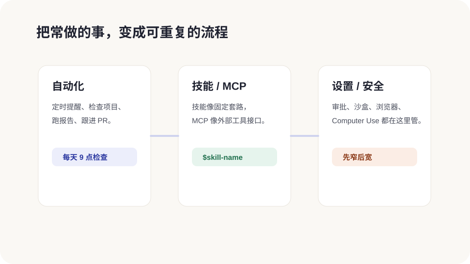

自动化、技能和外部工具
当你已经会让 Codex 完成一次任务,下一步就是让它“按固定套路重复做”。自动化负责定时回来,技能负责按套路做事,MCP 和插件负责连接外部工具。

自动化:让 Codex 定时回来看看
自动化适合这些事情:
- 每天检查项目有没有新报错。
- 每周整理一次最近改动。
- 每隔几分钟看看一个部署是否完成。
- 定时检查 PR 反馈,有新问题就提醒你。
它跑完后,如果有发现,通常会进入 App 里的待处理区。没发现就可以自动归档,不会一直打扰你。
Triage:自动化的收件箱
自动化不是每次都应该打扰你。App 里通常会有类似 Triage 的待处理区:
- 有发现的问题,放进 Triage 给你看。
- 没有发现的问题,可以自动归档。
- 你可以筛选未读、已读或历史运行记录。
写自动化提示词时,一定说清楚“什么情况算有发现”。否则它可能每次都产出一篇没必要的报告。
线程自动化和普通自动化怎么选
| 类型 | 怎么理解 | 适合 |
|---|---|---|
| 线程自动化 | 在同一条对话里定时醒来 | 部署等待、长任务跟进、需要保留上下文的循环。 |
| 普通/项目自动化 | 每次按固定提示新跑一次 | 日报、周报、巡检、多个项目重复检查。 |
线程自动化特别适合“这件事现在还没结束,待会儿回来继续看”的场景。比如部署还在排队、PR 等待别人回复、长任务还在跑。它会沿着同一条对话继续,所以不用每次重新解释背景。
自动化提示词要写得耐用
普通聊天提示词可以依赖上下文,自动化提示词不行。它可能隔几小时、几天后才再次运行,所以要写得像一张工作说明书。
一条耐用的自动化提示词通常包含:
- 检查对象:哪个项目、哪个页面、哪个数据源。
- 检查频率:每天、每周、每隔几分钟,或 cron 自定义。
- 判断标准:什么算正常,什么算异常。
- 输出格式:清单、表格、优先级、文件链接。
- 停止条件:什么情况下不用继续提醒。
自动化为什么常配 Worktree
如果项目是 Git 仓库,自动化可以跑在后台 Worktree 里。这样它就算改文件,也不会直接撞上你当前正在改的那份。
新手规则:自动化如果可能改文件,优先让它在 Worktree 里跑。只是读信息、做报告,Local 也可以。
技能:把一套做法封成按钮
技能像一张“菜谱”。比如“做一次发布检查”“生成一份周报”“把截图转成 Figma 设计稿”。你可以显式点名技能,也可以让 Codex 根据任务自动选择。
使用时通常写成:
$skill-name 请按这个技能的流程处理当前项目
如果一件事你每周都要做,就值得考虑把它整理成技能。
自动化和技能可以一起用
自动化负责“什么时候回来”,技能负责“回来之后按什么流程做”。这俩组合起来很适合固定巡检:
- 每周一自动运行一次“发布前检查”技能。
- 每天上午自动运行一次“断链检查”技能。
- 每次部署后自动运行一次“页面视觉验收”技能。
新手提示词可以这样说:“请先手动用这个流程跑一次,确认输出靠谱后,再帮我创建自动化。”先手动跑通,再定时,会稳很多。
什么时候该用技能
技能适合“步骤固定,但每次材料不同”的任务:
- 每次发布前都要检查链接、构建、SEO。
- 每次写教程都要按同一套口吻和结构。
- 每次生成文档都要先渲染、再检查版式。
- 每次做设计稿都要先读设计规范。
如果只是一次性的简单任务,直接说给 Codex 听就够。技能是为了复用,不是为了显得高级。
插件:把技能和工具打包安装
插件可以包含技能、工具、连接器和界面资源。你可以把它理解成“Codex 的扩展包”。普通读者不需要一开始就会做插件,但要知道:如果某个工作流已经有成熟插件,优先安装插件,别自己从零搭。
MCP:让 Codex 连接外部系统
MCP 是一种连接外部工具的方式。比如让 Codex 访问设计工具、项目管理工具、内部文档或其他服务。它不是“上网搜一下”,而是更结构化地拿到你授权的数据和操作能力。
新手可以先记一句话:需要私有数据或团队工具时,优先找插件 / MCP / 连接器,不要让 Codex 靠猜。MCP 配置通常可以在 App、CLI、IDE 之间共用,所以团队项目里更要写清权限和用途。
网页搜索:查最新资料时要让它给来源
Codex 可以使用网页搜索来查最新公开资料。它和 MCP 不一样:MCP 更像连接你授权的系统,网页搜索更像查公开网页。
遇到这些情况,别让 Codex 只凭记忆:
- 产品功能、价格、限制、入口可能刚更新。
- 要写教程,需要核对官方文档。
- 要处理第三方平台部署、域名、DNS、账号设置。
技能、插件、MCP 怎么选
| 你想做什么 | 优先选 | 原因 |
|---|---|---|
| 让 Codex 按固定流程写作、检查、生成文件 | 技能 | 它像流程说明书,最适合复用步骤。 |
| 安装一整套现成能力 | 插件 | 插件能把技能、工具、配置打包。 |
| 访问外部系统或私有数据 | MCP / 连接器 | 它提供结构化数据和授权操作。 |
| 只是问一个一次性问题 | 普通提示词 | 不要把简单事情复杂化。 |
AGENTS.md 和 Memories:让 Codex 记住规矩
AGENTS.md 是项目里的长期说明书。比如你反复提醒 Codex“这个项目不要加新依赖”,就可以把这句话写进去。
Memories 则更像“个人偏好”。它在可用时可以帮 Codex 记住跨线程有用的信息。敏感信息不要写进去,项目规则优先放 AGENTS.md。
AGENTS.md 里适合写什么
- 项目怎么启动、怎么测试、怎么构建。
- 文案口吻:口语化、少术语、面向零基础。
- 代码约束:不要新增依赖、不要改全局样式、不要碰某些目录。
- 验收方式:改完必须跑哪些检查。
- Review 偏好:优先指出风险,再讲总结。
不适合写进去的东西:密码、API Key、私人账号、临时计划。项目规则要长期稳定,不是当天备忘录。
好自动化长什么样
- 任务范围清楚:检查什么,不检查什么。
- 输出标准清楚:什么情况报告,什么情况归档。
- 权限保守:默认不要给 full access。
- 先手动跑一次:确认提示词靠谱,再设成定时。
- 选一个你经常重复做的任务,比如检查断链。
- 写清检查对象、频率、报告标准、停止条件。
- 先在普通线程里让 Codex 模拟执行一次。
- 确认输出靠谱后,再创建自动化。